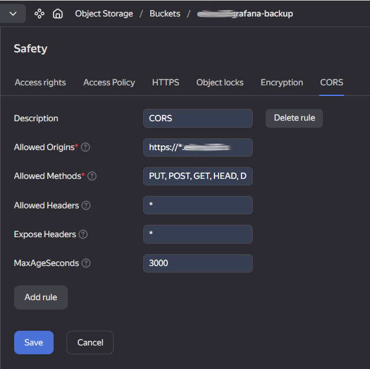

В статье рассматривается пример развёртывания MinIO в качестве объектного хранилища S3 для программного комплекса ELMA365.
Рекомендуемой топологией MinIO для ELMA365 является Multi-Node Multi-Drive (MNMD) или Distributed/Распределённая конфигурация.
MinIO в конфигурации MNMD поддерживает erasure coding. Это позволяет допустить потерю до половины узлов или дисков в кластере, при этом продолжая обслуживать операции чтения. Используйте калькулятор Erasure Code Calculator при планировании и проектировании кластера MinIO.
Минимальная конфигурация MNMD, поддерживающая erasure coding, состоит из четырёх нод (серверов) по четыре диска в каждой. Соберите ноды в один server pool, при этом в MinIO нужно:
- использовать последовательно пронумерованные имена хостов;
- использовать нотации расширения
{x...y}для обозначения последовательного ряда хостов при создании пула серверов; - использовать нотации расширения
{x...y}для обозначения последовательного ряда дисков; - чтобы порядок физических дисков оставался постоянным при перезапусках, чтобы заданная точка монтирования всегда указывала на один и тот же отформатированный диск.
Установка состоит из нескольких этапов:
- Подготовка нод (серверов).
- Подготовка дисков.
- Установка MinIO.
- Установка MinIO Client.
- Создание пользователя и группы minio-user.
- Создание файла сервиса для systemd.
- Создание файла окружения для MinIO.
- Запуск сервиса MinIO.
- Настройка подключения к MinIO.
- Создание бакета.
- Настройка CORS.
- Конфигурация HAProxy (блок s3minio).
- Подключение к MinIO в ELMA365.
Шаг 1. Подготовка нод (серверов)
Создайте четыре ноды (сервера) с последовательно пронумерованными именами хостов:
- minio1.example.com;
- minio2.example.com;
- minio3.example.com;
- minio4.example.com.
Создайте необходимые сопоставления имён хостов в DNS. Если такой возможности нет, внесите нужные записи в /etc/hosts.
Шаг 2. Подготовка дисков
- На каждой ноде создайте четыре каталога для монтирования четырёх дисков:
sudo mkdir -p /var/lib/minio/data1
sudo mkdir -p /var/lib/minio/data2
sudo mkdir -p /var/lib/minio/data3
sudo mkdir -p /var/lib/minio/data4
Для обеспечения лучшей производительности используйте файловую систему XFS. В MinIO не различаются типы дисков и не используются смешанные типы хранилищ, поэтому на всех нодах должен использоваться одинаковый тип дисков (NVMe, SSD или HDD) с одинаковой ёмкостью, например, N ТБ.
Начало внимание
В MinIO ограничивается размер используемого диска до самого маленького диска в развёртывании. Например, если в развёртывании есть 15 дисков по 10 ТБ и 1 диск по 1 ТБ, в MinIO ёмкость каждого диска ограничится до 1 ТБ.
Конец внимание
- На каждой ноде подготовьте на дисках файловую систему XFS:
sudo mkfs.xfs /dev/sdb -L DISK1
sudo mkfs.xfs /dev/sdc -L DISK2
sudo mkfs.xfs /dev/sdd -L DISK3
sudo mkfs.xfs /dev/sde -L DISK4
- На каждой ноде добавьте точки монтирования четырёх дисков в файле
/etc/fstab:
LABEL=DISK1 /var/lib/minio/data1 xfs defaults,noatime 0 2
LABEL=DISK2 /var/lib/minio/data2 xfs defaults,noatime 0 2
LABEL=DISK3 /var/lib/minio/data3 xfs defaults,noatime 0 2
LABEL=DISK4 /var/lib/minio/data4 xfs defaults,noatime 0 2
- Проверьте монтирование ранее подготовленных дисков:
sudo mount -av
Шаг 3. Установка MinIO
На каждой ноде загрузите последний стабильный binary-файл MinIO и установите его в систему:
wget https://dl.min.io/server/minio/release/linux-amd64/minio
chmod +x minio
sudo mv minio /usr/local/bin/
Шаг 4. Установка MinIO Client
На ноде minio1.example.com загрузите последний стабильный binary-файл MinIO Client и установите его в систему:
wget https://dl.min.io/client/mc/release/linux-amd64/mc
chmod +x mc
sudo mv mc /usr/local/bin/
Шаг 5. Создание пользователя и группы minio-user
- На каждой ноде создайте пользователя и группу minio-user:
sudo groupadd -r minio-user
sudo useradd -M -r -g minio-user minio-user
- На каждой ноде cоздайте директории для хранения TLS сертификатов, выполнив команду:
sudo mkdir -p /etc/minio/certs/CAs
- На каждой ноде задайте разрешения на доступ к каталогам, предназначенным для использования в MinIO:
sudo chown -R minio-user:minio-user /etc/minio
sudo chown -R minio-user:minio-user /var/lib/minio
Шаг 6. Создание файла сервиса для systemd
- На каждой ноде загрузите официальный файл сервиса MinIO:
sudo curl -O https://raw.githubusercontent.com/minio/minio-service/master/linux-systemd/minio.service
- Проверьте содержимое
minio.serviceперед его использованием и переместите этот файл в каталог конфигурацииsystemd:
sudo mv minio.service /etc/systemd/system
Начало внимание
На этом шаге не запускайте minio.service.
Конец внимание
Шаг 7. Создание файла окружения для MinIO
На каждой ноде создайте файл окружения в /etc/default/minio. Служба MinIO использует этот файл в качестве источника всех переменных окружения, используемых MinIO и файлом minio.service.
Пример файла окружения в /etc/default/minio:
# Set the hosts and volumes MinIO uses at startup
# The command uses MinIO expansion notation {x...y} to denote a
# sequential series.
# The following example covers four MinIO hosts
# with4 drives each at the specified hostname and drive locations.
# The command includes the port that each MinIO server listens on
# (default 9000)
MINIO_VOLUMES="http://minio-server{1...4}.your_domain:9000/var/lib/minio/data{1...4}/minio"
# Set all MinIO server options
# The following explicitly sets the MinIO Console listen address to
# port 9001 on all network interfaces. The default behavior is dynamic
# port selection.
MINIO_OPTS="--certs-dir /etc/minio/certs --console-address :9001"
MINIO_REGION="ru-central-1"
# Set the root username. This user has unrestricted permissions to
# perform S3 and administrative API operations on any resource in the
# deployment.
# Defer to your organizations requirements for superadmin user name.
MINIO_ROOT_USER=elma365user
# Set the root password
# Use a long, random, unique string that meets your organizations
# requirements for passwords.
MINIO_ROOT_PASSWORD=SecretPassword
# Set to the URL of the load balancer for the MinIO deployment
# This value *must* match across all MinIO servers. If you do
# not have a load balancer, set this value to to any *one* of the
# MinIO hosts in the deployment as a temporary measure.
# MINIO_SERVER_URL="https://minio.example:9000"
MINIO_VOLUMES:minio-server{1...4}.your_domain— ноды, объединённые в единый пул с нотацией расширения{x...y};9000— порт подключения;/var/lib/minio/data{1...4}/minio— последовательный ряд дисков с нотацией расширения{x...y};
MINIO_ROOT_USER— имя пользователя администратора MinIO;
MINIO_ROOT_PASSWORD— пароль, в котором рекомендуется использовать не менее 16 символов.
Настройка включения TLS/SSL в MinIO
Подробнее о настройке TLS/SSL в MinIO читайте в официальной документации MinIO. |
Шаг 8. Запуск сервиса MinIO
- Выполните следующие команды на каждой ноде, чтобы запустить службу MinIO:
sudo systemctl daemon-reload
sudo systemctl enable minio.service
sudo systemctl start minio.service
- Убедитесь в том, что сервис minio запустился и работает без ошибок:
sudo systemctl status minio.service
journalctl -f -u minio.service
Шаг 9. Настройка подключения к MinIO
Создайте alias для minio на ноде minio-server1.your_domain:
/usr/local/bin/mc alias set minio http://minio-server1.your_domain:9000 elma365user SecretPassword
Шаг 10. Создание бакета
Важно: наименование бакета в S3 должно соответствовать формату s3elma365*.
начало примера
Примеры наименований для бакетов
s3elma365.s3elma365-dev.s3elma365-prod.
конец примера
Чтобы создать для работы ELMA365 бакет c наименованием s3elma365, используйте команду на ноде minio-server1.your_domain:
/usr/local/bin/mc mb -p minio/s3elma365 --region=ru-central-1
Создание в S3 бакетов для работы ELMA Bot
Для создания бакетов выполните следующие команды на ноде minio-server1.your_domain: |
Шаг 11. Настройка CORS
Cross-Origin Resource Sharing (CORS) — это механизм, с помощью которого ограничивается доступ к ресурсам веб-приложения из сторонних доменов. Вы можете определить список доменов, с которых разрешено направлять запросы к приложению ELMA365, а также указать доступные заголовки и методы HTTP.
Настройте CORS одним из способов:
- С помощью файла с конфигурацией CORS.
- Через веб-интерфейс сервиса для управления данными, например Yandex Object Storage.
Задать настройки CORS в конфигурационном файле
- Создайте файл
cors.xmlс конфигурацией CORS, например:
<?xml version="1.0" encoding="UTF-8"?>
<CORSConfiguration xmlns="http://s3.amazonaws.com/doc/2006-03-01/">
<CORSRule>
<AllowedHeader>*</AllowedHeader>
<AllowedMethod>GET</AllowedMethod>
<AllowedMethod>PUT</AllowedMethod>
<AllowedMethod>HEAD</AllowedMethod>
<AllowedMethod>POST</AllowedMethod>
<AllowedMethod>DELETE</AllowedMethod>
<AllowedOrigin>https://*.elma365.ru</AllowedOrigin>
<MaxAgeSeconds>3000</MaxAgeSeconds>
</CORSRule>
</CORSConfiguration>
Где:
AllowedHeader— заголовки, которые доступны в запросах. Чтобы разрешить все заголовки, используйте символ*;AllowedMethod— разрешённые методы HTTP, напримерGET,POST,PUT,DELETE,HEAD;AllowedOrigin— источники, из которых можно обращаться к ресурсам веб-приложения. Чтобы разрешить доступ с любых доменов, используйте символ*. Для повышения безопасности рекомендуется указать определённые домены, например https://*.elma365.ru;MaxAgeSeconds— для уменьшения количества запросов и улучшения производительности можно сохранять в кеше браузера разрешение на запросы из определённого источника. Оно проверяется в предварительном запросе, который выполняется перед основным. Укажите время в секундах, в течение которого разрешение хранится в кеше и новые предварительные запросы не отправляются.
Вы также можете задать в конфигурации CORS параметр ExposeHeader. В нём определяются заголовки, которые отображаются в ответах на запросы. Не указывайте этот параметр в .xml-файле, если заголовки в ответах показывать не нужно.
- Примените настройки CORS к бакету с помощью команды:
/usr/local/bin/mc cors set minio/s3elma365 cors.xml
- Убедитесь, что настройки CORS применены правильно, выполнив команду:
/usr/local/bin/mc cors get minio/s3elma365 --json
Задать конфигурацию CORS через сервис управления данными
Вы можете настроить CORS через веб-интерфейс сервиса для управления данными.
Пример заполнения параметров CORS в Yandex Object Storage:

Подробнее о том, как настроить CORS читайте в официальной документации Yandex Cloud.
Шаг 12. Конфигурация HAProxy (блок s3minio)
В рамках статьи пользовательский трафик приходит в HAProxy по minio.your_domain:9000 и равномерно балансируется между нодами кластера MinIO.
Балансировку нагрузки между нодами кластера MinIO осуществите с помощью HAProxy. Настройте его согласно статье «Конфигурация HAProxy для S3 Minio».
Шаг 13. Подключение к ELMA365
Параметры для подключения к MinIO:
- address —
minio-server.your_domain:9000; - bucket —
s3elma365; - region —
ru-central-1; - access key ID —
elma365user; - secret access key —
SecretPassword; - upload method —
PUT; - enable SSL —
No.
При подключении MinIO с использованием TLS/SSL укажите в enable SSL значение Yes.